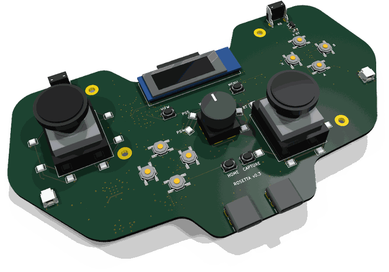

Blog ·
Rosetta, a controller whose knob picks the console
- examples
- rosetta
- usb
- sensors
- batteries
Rosetta is one game controller for a PS4, a PS5, an Xbox, a Switch or anything over Bluetooth. A five-position knob, where an Xbox 360 pad has its guide button, picks the console. We asked for it to show what Via, our kit for designing checked circuit boards, can make. An AI agent designed the board with Via's tools, skills and gates.

We are Team Reagent, the engineers who make Via. We wrote the brief, and we read the agent's work, its checks and its mistakes. Version 0.1 carried the sticks and the triggers on cables. For v0.2 we sent a picture of an Xbox 360 controller's main board and asked for that. For v0.3 we asked for wireless play, a screen, lights around the sticks and turbo. Rosetta's page shows the result in 3D: 176 parts on six copper layers.
How one knob becomes one number
The knob is a rotary switch with five stops. Behind it, six 1 kΩ resistors run in a chain from 3.3 V to ground. Each stop touches one joint, at 5/6, 4/6, 3/6, 2/6 or 1/6 of the supply. That chain is a voltage divider. Horowitz and Hill cover it in chapter 1 of The Art of Electronics (3rd edition, Cambridge University Press, 2015).
A 12-bit converter, an MCP3208, reads the joint as one of 4096 steps. Its reference is the same 3.3 V, so the reading is a ratio and any supply error cancels. Between stops, a 100 kΩ resistor pulls the reading near zero, which the firmware reads as no console.
The agent's first pull-down was 1 MΩ. The converter's input can leak 1 µA, and Ohm's law turns that into 1 V across 1 MΩ. That reads as a console. The simulation showed it, and the pull-down became 100 kΩ. Six decks now run every resistor across its 1% tolerance, 370 runs in all. Each stop stays within 0.04 of full scale of its target, and the thresholds sit 0.0833 away.
How a console knows its controller
A USB device never speaks first. The host, here the console, polls it on a timetable. When a device plugs in, the host reads its device descriptor. That short table holds a vendor number and a product number. Chapter 9 of the USB 2.0 Specification (USB Implementers Forum, 2000) defines it.
Rosetta's firmware gives each USB mode the numbers of that console's own controller. A host reads them when a device connects. So a turn of the knob makes Rosetta disconnect and return as a new device.
A PS4, a PS5 and an Xbox also send a challenge that only a licensed controller can answer. Rosetta's second USB-C port takes a licensed controller, the donor. The RP2040 runs a second USB port in software and relays each challenge to it. This relay is the design's bet, and nobody has tried it on a console.
Turbo depends on polling too. The firmware assumes every console polls at least every 8 ms. The fastest turbo is 20 presses a second: 25 ms down, 25 ms up. Each half spans at least three polls, so the console sees every press. The agent kept the timing fixed and regular. It declined to build timing meant to slip past a game's detection.
How a stick and a trigger become numbers
A classic thumbstick holds two potentiometers: a resistive track and a sliding contact for each axis. The contact rubs the track, and wear on it is a common cause of what players call drift.
A Hall sensor needs no contact. In 1879 Edwin Hall passed a current along gold leaf in a magnetic field. A small voltage appeared across the leaf, at right angles to the current. He reported it in "On a New Action of the Magnet on Electric Currents" (American Journal of Mathematics, 1879). The voltage grows with the field, so a magnet's distance becomes a voltage.
The stick footprint takes ALPS's RKJXV122400R, the potentiometer stick of PlayStation and Xbox pads. Hall sticks made for the same holes fit too. Each trigger is to carry a magnet over a DRV5055 Hall sensor on the board. Its output, like the knob's, is a ratio of 3.3 V.
How the cell charges and is counted
A lithium-ion cell charges in two phases. First the charger pushes a fixed current, and the cell's voltage climbs. Near full, about 4.2 V for most cells, the charger holds the voltage and the current tapers. This is constant current, then constant voltage, as TI's datasheet for the BQ25895 charger (SLUSC88) describes.
Rosetta's BQ25895 charges at up to 2.5 A. A 120 Ω resistor caps its input at 2.96 A from a 5 V USB-C charger. The firmware turns off its 9 and 12 V modes, because the same 5 V feeds the donor controller. With a flat cell, the charger runs Rosetta from the cable as a wired controller.
The cell's voltage falls as it empties, and the electronics need a steady 3.3 V. A linear regulator can only take voltage away. The one on v0.1 needed about 3.66 V in for 3.3 V out at 1 A. The cell spends its last part below that. Version 0.3 uses a TPS63001 buck-boost converter instead. It stores energy in an inductor and releases it at a higher or lower voltage. Erickson and Maksimović cover the buck-boost in Fundamentals of Power Electronics (2nd edition, Kluwer Academic, 2001). On Rosetta it holds 3.3 V with the cell down to 2.5 V.
Charge is current times time: a 3000 mAh cell gives 3 A for an hour. A 10 mΩ resistor in the cell's negative lead drops 25 mV at 2.5 A. The BQ27441 gauge measures that voltage and adds it up over time, which is called coulomb counting.

How the design went
Each version is one Python file, design.py. Via's tools turn it into a routed KiCad project. Then four checks run: electrical rules, design rules, simulation and the fabrication files.
In v0.2 a 3D render showed a back paddle floating off the board. No check had reported it, because the checks read the outline's bounding box. On four layers, every route left two to six of the RP2040's connections open. The agent drew links by hand for four routes before it moved to six layers. It logged the lesson as mistake M136: a chip that fails route after route needs more room.
Version 0.3 grew to 176 parts. Each stick's ring of eight LEDs first hit the stick's rectangular body. Turned by half a step, 22.5 degrees, all eight clear it. After a 12-pass route, six power links stayed open at the charger, the gauge and the buck-boost. Their pins sit on a 0.5 mm pitch, too tight for a 0.4 mm power track. The agent drew a short narrow neck out of each pin, and three more links by hand.
The last run printed GREEN with 5 warnings. All five are silkscreen outlines of the two USB-C sockets and the radio module, which overhang on purpose.
What is open
No Rosetta board has been made. The firmware holds the decisions for the knob, turbo and the charger's setup, each with host tests. It does not yet hold the USB descriptors and reports for each console. Nor does it hold the software USB host, the relay or the Bluetooth stacks. The gauge has not been told the cell's capacity. The inductors' saturation currents are not checked against the worst-case peaks. The triggers' magnets and pivots are not designed. The v0.3 README lists every open item.
Next we want the agent to write the USB side of the firmware for one console. After that, we want to test the relay on a built board, with a donor controller and a console.